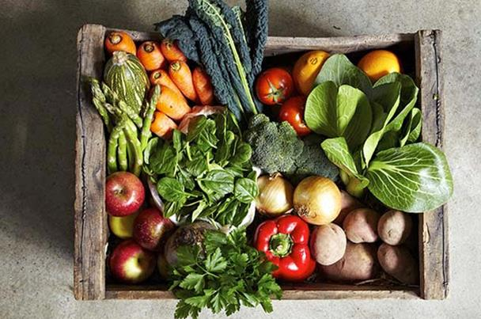

<!-- We don't need full layout here, because this page will be parsed with Ajax-->
<!-- Top Navbar-->

<div class="pages">
  <!-- Page, data-page contains page name-->
  <div data-page="about" class="page">
    <!-- Scrollable page content-->
    <div class="page-content">
      <div class="navbar">
  <div class="navbar-inner">
    <div class="left"><a href="#" class="back link"> <i class="icon icon-back"></i><span>العوده </span></a></div>
    <div class="center sliding">   </div>
    <div class="right">
       
      <!-- Right link contains only icon - additional "icon-only" class--><a href="#" class="link icon-only open-panel"> <i class="icon icon-bars"></i></a>
    </div>
  </div>
</div>
      <div class="content-block presentcon">
<div class="row">
  <div class="col-100">

  </div>
</div>

<div class="row t">
  <div class="col-100">
<h4>مواد غذائية هي الأكثر أهمية لجسم الإنسان :</h4>
يبحث الناسُ عن اللذة، ولا يحاولون البحث عن المواد الغذائية الأهم لهم من حيث احتوائها على الفيتامينات والمعادن التي قد تفيد صحتهم.

وحددت مجموعة من الأطباء 5 مواد غذائية تحتوي على أهم الفيتامينات والمعادن الأساسية لصحة الجسم، واعتبروها الأكثر أهمية للجسم.

وفي المقام الأول، نذكر قائمة المواد الغذائية التي تحتوي على الفيتامين (د)، الذي يعتبره العلماء الفيتامين الأهم لصحة الإنسان، والذي يعد الأفضل للوقاية من السرطان.

وتجدر الإشارة إلى أن نقص الفيتامين (د) يهدد مناعة الإنسان، حيث أكد العلماء أنه على الرغم من أنه يمكن الحصول على هذا الفيتامين من خلال أشعة الشمس، إلا أنه موجود في العديد من المواد الغذائية؛ على غرار منتجات الألبان وأصناف الأسماك الدهنية والبيض.

وفي المرتبة الثانية، يوجد حمض الفوليك، أو ما يسمى بالفيتامين (ب9) إذ يسهم هذا الفيتامين في تعزيز الجهاز المناعي للجسم، ويساعد على تكوين خلايا الدم البيضاء.

وعلاوة على ذلك، يعد الفيتامين (ب9) مهماً لصحة الجهاز العصبي، لذلك يمكن اعتبار القرنبيط والفاصوليا والبرتقال والسبانخ من أهم المواد الغذائية، وذلك لاحتوائها على حمض الفوليك.

كما يعد صفار البيض، والبقدونس، والملفوف، واللفت، والفستق، واليقطين، من أهم المواد الغذائية التي لها عدة فوائد على صحة الجسم، وذلك لاحتوائها على مادة اللوتين، وهي مادة مضادة بالأكسدة تعمل على الحفاظ على صحة الخلايا. كما يعتبر الأطباء هذه المادة إحدى أهم المواد التي تساعد على منع مشاكل الأعين التي قد تؤدي إلى فقدان البصر.

وفي الواقع، يعدّ الأوميغا 3 من أهم الأحماض الدهنيّة التي تعود بالنفع على صحة الجسم، وذلك وفقاً لما أكده العلماء.

وتعتبر هذه المادة مهمة للوقاية من أمراض القلب والأوعية الدموية وتحمي الإنسان من الاضطرابات التي قد تصيب الذاكرة. ويعتبر الأوميغا 3 في الأسماك الغنية بالزيوت من أهم وسائل الوقاية من مرض الكآبة.

ومن جهة أخرى، يندرج الحديد ضمن قائمة أهم المعادن التي لها فوائد جمة على صحة الجسم، خاصة أن نقص هذا المعدن من شأنه أن يؤدي إلى الإصابة بفقر الدم الذي يترتب عليه الشعور بالتعب المزمن، وصعوبة التركيز، وضعف الذاكرة، والإجهاد.

وللحفاظ على مستوى الحديد في الدم من المهم تناول الكبد، والأسماك، والخضر الورقية على غرار البقدونس، فضلاً عن الأعشاب مثل الصعتر، ووتناول التفاح والبنجر.

ومن جهتهم، أكد الأطباء على أهمية وضرورة تناول المواد الغذائية المذكورة آنفاً طازجة، وذلك للاستفادة أكثر من الفيتامينات والمعادن التي تحتويها.
  </div>
</div>
   </div>
    </div>
  </div>
</div>